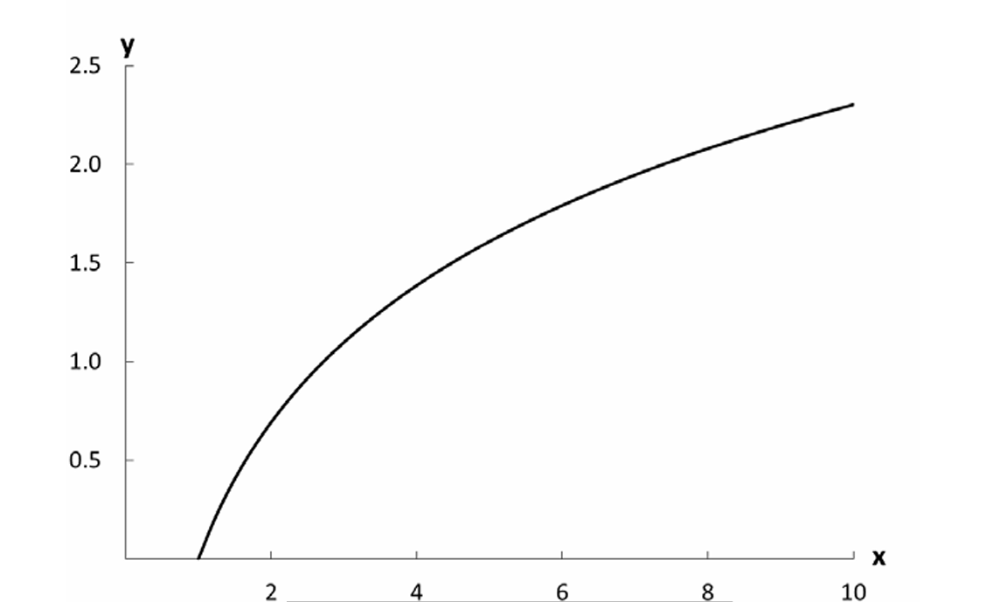
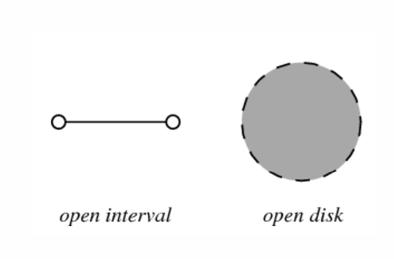
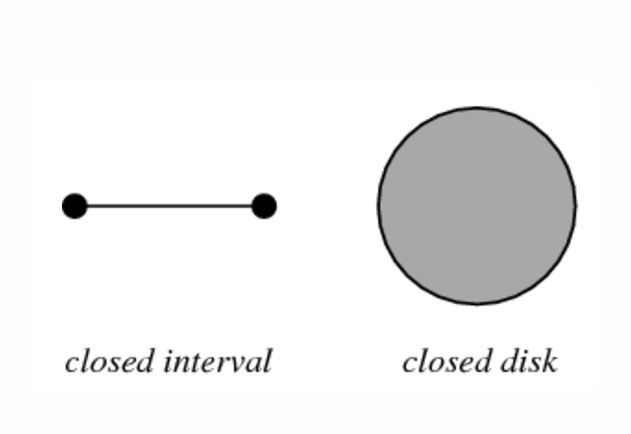
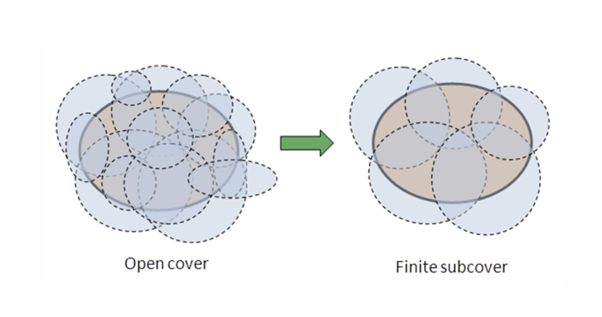
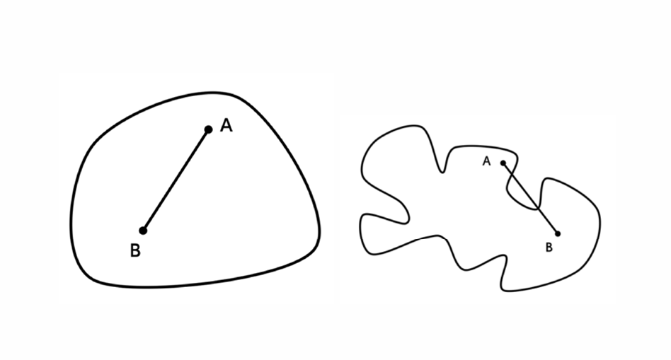
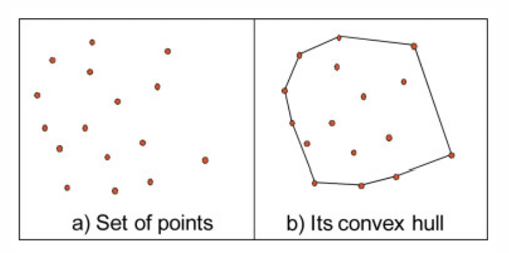

EPPS Math and Coding Camp
Limit and sequences - Aug 8
3.2.3.4 Logarithms (Properties of log)
- Logarithms: \(log_a x\)
- \(a^{log_a x}=x\)
- \(log_a a^x=x\)
- if \(log_a x=b\), then \(a^{log_ax}=a^b\), thus \(x=a^b\)
- The base for the natural log is the \(e \approx 2.7183\)

Example:
If you suspect that education increases the probability of voting in national elections, but that each additional year of education has a smaller impact on the probability of voting than the preceding year’s, then the log functions are good candidates to represent that conjecture.
if \(p_v\) is “probability of voting” and \(ed\) is “years of education”:
- then \(p_v= \alpha + \beta ed\) specifies a linear relationship where an additional year of education has the same impact on the probability of voting regardless of how many years of education one has had.
- \(p_v= \alpha + \beta ed^2\) represents the claim that the impact of education on the probability of voting rises the more educated one becomes.
- We transform the relationship between \(p_v\) and \(ed\) from a linear one to a nonlinear one where the impact of an additional year of education declines the more educated one becomes: \(p_v= \alpha + \beta (\ln(ed))\)
- Algebraic rules for logs
\[ \ln(x_1 \cdot x_2)=\ln(x_1)+\ln(x_2) \text{, for }x_1,x_2>0 \]
\[ \ln \frac{x_1}{x_2}=\ln(x_1)-\ln(x_2) \text{, for }x_1,x_2>0 \]
\[ \ln(x_1 + x_2) \neq \ln(x_1)+\ln(x_2) \text{, for }x_1,x_2>0 \]
\[ \ln(x_1 - x_2) \neq \ln(x_1)-\ln(x_2) \text{, for }x_1,x_2>0 \]
\[ \ln(x^b)=b\ln(x) \text{, for } x>0 \]
\[ \ln(1+x) \approx x \text{, for } x>0 \text{ and } x \approx 0 \]
3.3.1 Preference Relations
Transitivity states that if \(a\) is at least as good as \(b\), and \(b\) is at least as good as \(c\), then a is at least as good as \(c\): if \(aRb\) and \(bRc\), then \(aRc\).
Symmetry states that if \(aRb\), then \(bRa\) for all \(a\) and \(b\). In the realm of preference orderings, this implies complete indifference: everything is at least as good as everything else.
Reflexivity: A relation on a set \(A\) is reflexive if for all \(a \in A\), \(aRa\) is \(True\).
3.3.2 Utility Functions
- Integers and the real numbers are complete and transitive for all the usual ordering relations.
- Thus, if we want to represent our “at least as good as” relation with numbers, this relation had better have the same properties.
- we can translate the relation R on any set A to a function u on the same set.
- This u is called a utility function and assigns a value, typically a real number, to each element in A.
4.1 SEQUENCES AND SERIES
4.1.1 Sequences
- A sequence is an ordered list of numbers.
For example,\(\{1,2,3,4 \ldots \}\)
- we can write the whole sequence in short hand as: \(\{x_i\}^N_{i=1}\)
For example, \(x_i=i\)
- we can write it as \(\{i\}^{\infty}_i\)
For example, the sequence\(\{2,4,6 \ldots \}\) is a a subsequence of\(\{1,2,3,4 \ldots \}\), which one can represent as \(x_i=2i\)
4.1.2 Series
- A series is the sum of a sequence. Put differently, a series is a sequence with addition operators between each of the elements.
For example, \(\{1+2+3+4+ \ldots \}\)
- We can write this as \(\sum^N_{i=1}x_i\) where \(N= \infty\)
4.2 LIMITS
- A limit describes the behavior of a function, sequence, or series of numbers as it approaches a given value.
- Knowing the limit of a function can help us determine what the rate of change of the function is, and knowing the rate of change is useful in both statistics and formal models.
- The limit of a sequence or a series is important for the study of game theory and other formal models, and it is also appealed to in some areas of statistics.
4.2.1 Limits and Sequences
- A limit of a sequence \(\{x_i\}\) is a number \(L\) such that \(\lim_{i \rightarrow \infty}x_i=L\)
- The expression is read as “the limit of \(x_i\) as \(i\) approaches infinity is \(L\).”
- We say a sequence (or series, or function) converges if it has a finite limit, and diverges if it either has no limit or has a limit of \(\pm \infty\).
- The extreme values of a set are the minimum and maximum values in that set. Limits differ in general from the extreme values of a sequence.
4.2.2 Limits and Series
- The limit of a series is much like that of a sequence, except that one is looking for the sum of all elements in an infinite sequence rather than the “endpoint.”
- If the series is \(\sum^N_{i=1}x_i\), then the limit is \(\lim_{N \rightarrow \infty} \sum^N_{i=1}x_i=S\).
- The limit \(\lim_{N \rightarrow \infty} \sum^N_{i=1}i= \infty\), and so the series is divergent
4.2.3 Limits and Functions
- For the function \(y=f(x)\), the limit of the function is the value of \(y\) that the function tends toward given arbitrarily small movements toward a specific value of \(x\), say \(x=c\).
- The limit either exists or does not exist for a given value of \(x\), and if it does exist we can calculate it. Formally, much as for a sequence we can write \(\lim_{x \rightarrow c}f(x)=L\). One reads that notation as “the limit of \(f\) of \(x\) as \(x\) approaches \(c\) is \(L\).”
- Unlike a sequence, however, it’s possible to approach a point (other than \(\pm \infty\)) from two different directions. If \(x\) approaches \(c\) from above (i.e., \(x\) decreases toward \(c\)), then we write \(\lim_{x \rightarrow c^+}f(x)=L^+\)
- If \(x\) approaches \(c\) from below, we write \(\lim_{x \rightarrow c^-}f(x)=L^-\).
- If the limits from above and below are equal, so that \(L=L^+=L^-\), then the function has a unique limit at c.
Limit of \(f(x)=x^2 \text{ as } x \rightarrow 2\)
| x | f(x) |
|---|---|
| 1.9 | 3.61 |
| 1.95 | 3.8025 |
| 1.98 | 3.9204 |
| 1.99 | 3.9601 |
| 2.0 | 4 |
| 2.01 | 4.0401 |
| 2.02 | 4.0804 |
| 2.05 | 4.2025 |
| 2.1 | 4.41 |
Some properties of limits:
- In the situation in which the value of the function is undefined at \(c\) example:
let \(f=\frac{x^2-4}{x-2}\). This function is undefined at \(x=2\).
One way is to factor the numerator into\((x+2)(x-2)\),
and then divide the numerator and denominator by\((x-2)\).
Canceling the\((x-2)\) leaves \(x+2\), which approaches \(4\) from above and below as \(x \rightarrow 2\)
- Even when the numerator and denominator of a rational function do not cancel, one can still use the same approach when the limit is \(x \rightarrow \infty\) and the numerator and denominator of the function both go to \(\infty\) as well. In this case, just pick the terms on both bottom and top that are the biggest for any finite value of x, and then cancel common terms as above.
Example:
The limit of \(f= \frac{x^3+2x^2}{3x^3+2x-1}\) as \(x \rightarrow \infty\) is \(\frac{1}{3}\)
4.3 OPEN,CLOSED,COMPACT,ANDCONVEXSETS
- An open set is one in which there is some distance (which may be arbitrarily small) that you may move in any direction within the set and stay in the set.

- A closed set is one that contains all its limit points.

- A set that is not closed, in contrast, can have the point the sequence approaches — the set’s limit point — outside the set, even if all prior points in the sequence are in the set.
- The set contains all its limit points and can itself be contained within some finite boundary—is called compact.

- A subset of Rn for which every pair of points in the set is joined by a straight line that is also in the set is called a convex set. Formally, a set is convex if for all points \(x\) and \(y\) in it and all \(\lambda \in [0,1]\), the point \((1-\lambda)x+\lambda y\) is also in the set.

- The convex hull of a set \(A\) is the set \(A\) plus all the points needed to make A convex.

4.4 CONTINUOUS FUNCTIONS
- A continuous function is a function without sudden breaks in it.
- The graph of a discontinuous function has at least one break in it.
- A continuous function is one for which an arbitrarily small change in x causes an arbitrarily small change in y for all values of x.
Example:
Function\(f(x)=\frac{1}{x}\) is not continuous over domain R.
Problems
Problem 1
Rewrite the following by taking the log of both sides. Is the result a linear (affine) function?
\[y = \alpha + \beta_1 x_1 + \beta_2 x_2 + \beta_3 x_3\]
Problem 2
Rewrite the following by taking the log of both sides. Is the result a linear (affine) function? \[y = \alpha \times x_1^{\beta_1} \times x_2^{\beta_2} / x_3^{\beta_3}\]
Problem 3
Draw a graph to show that the sequence \(\{1, -1, 1, -1, 1, -1, \ldots\}\) is divergent.
Problem 4
Show whether \(f(x) = x + x^3\) has a limit at \(x = 3\) and, if so, find the value of the limit.
Problem 5
Show whether \(f(x) = (x - 3)(x + 5)\) has a limit at \(x = 4\) and, if so, find the value of the limit.
Problem 6
Show whether \(f(x) = \frac{3x^2 - 12}{x - 2}\) has a limit at \(x = 2\) and, if so, find the value of the limit.
Problem 7
Show whether \(f(x) = \frac{x^3 - 4}{x - 2}\) has a limit at \(x = 2\) and, if so, find the value of the limit.
Problem 8
For each of the following sets, state whether they are (a) open, closed, both, or neither; (b) bounded; (c) compact; (d) convex:
- \([1, 3]\)
- \((2, 5)\)
- \([0, 6] \cup [10, 12]\)
- \((2, 4) \cap [3, 4]\)
- \([0, 1)\)
Problem 9
Is the function \(f(x) = \frac{\ln(x)}{x}\) continuous for \(x \in [2, \infty)\)?
Problem 10
Is the function \[f(x) = \begin{cases} x^3 - 3x + 4 & \text{if } x < 3 \\ \frac{x^2}{2} & \text{if } x > 3 \end{cases}\] continuous? If so, why? If not, what changes would make it continuous?
Any Questions?